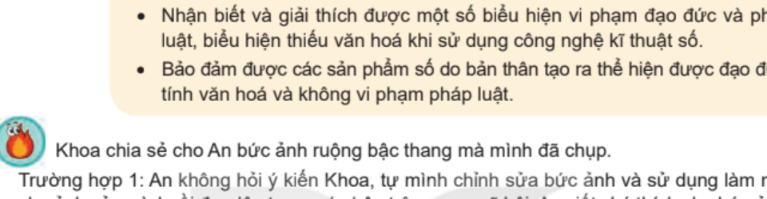
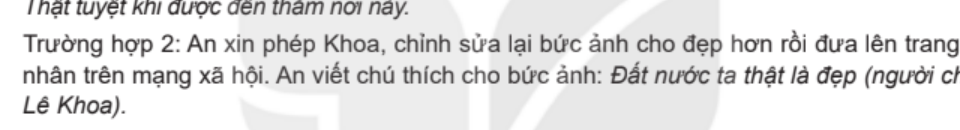
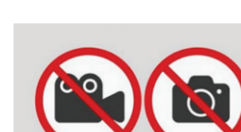
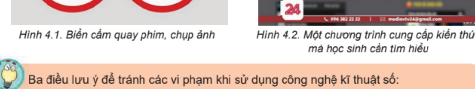
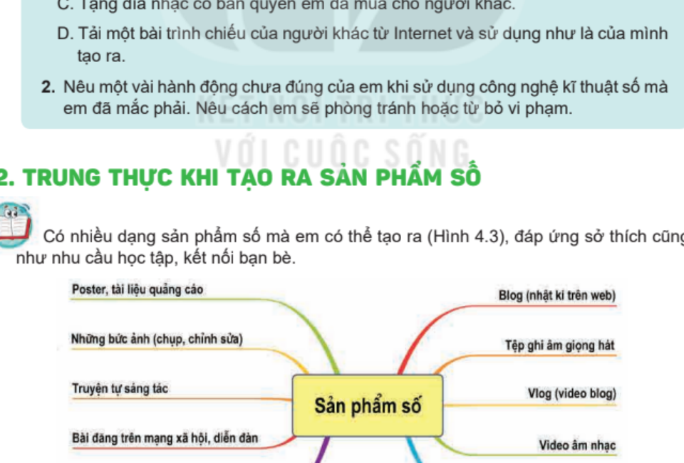
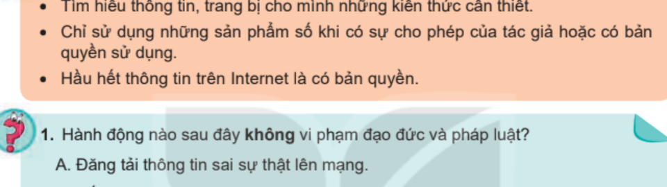

KẾ HOẠCH BÀI DẠY
MÔN: TIN HỌC 8 – BỘ SÁCH KẾT NỐI TRI THỨC VỚI CUỘC SỐNG
CHỦ ĐỀ 3: ĐẠO ĐỨC, PHÁP LUẬT VÀ VĂN HOÁ TRONG MÔI TRƯỜNG SỐ
BÀI 4: ĐẠO ĐỨC VÀ VĂN HOÁ TRONG SỬ DỤNG CÔNG NGHỆ KĨ THUẬT SỐ
Thời gian thực hiện: 1 tiết (45 phút) – SGK trang 18-19
I. MỤC TIÊU
1) Kiến thức
- Nhận biết và giải thích được một số biểu hiện vi phạm đạo đức và pháp luật, biểu hiện thiếu văn hoá khi sử dụng công nghệ kĩ thuật số, qua 8 biểu hiện nêu trong SGK trang 18: quay phim trong rạp chiếu phim; chụp ảnh ở nơi không cho phép; ghi âm trái phép các cuộc nói chuyện; tải về máy tính cá nhân các tệp bài hát, video có bản quyền để sử dụng mà chưa được phép; sao chép thông tin từ một trang web và coi đó là của mình; sử dụng phần mềm bẻ khoá; phát trực tiếp (livestream) hoặc chia sẻ các vụ bạo lực học đường, đưa lên mạng thông tin cá nhân của người khác mà chưa được phép; tham gia, chia sẻ, quảng cáo cho các trang web cổ vũ bạo lực, đánh bạc.
- Nêu được ba điều lưu ý để tránh vi phạm khi sử dụng công nghệ kĩ thuật số (SGK trang 19).
- Nhận biết được một số dạng sản phẩm số mà học sinh có thể tạo ra (Hình 4.3, SGK trang 19).
2) Năng lực
a) Năng lực chung
- Tự chủ và tự học: chủ động đọc SGK, tự rút ra các biểu hiện vi phạm và cách tránh vi phạm khi sử dụng công nghệ kĩ thuật số.
- Giao tiếp và hợp tác: thảo luận nhóm, trình bày và nhận xét ý kiến của bạn một cách tôn trọng.
- Giải quyết vấn đề và sáng tạo: đưa ra cách ứng xử phù hợp trong tình huống sử dụng sản phẩm số của người khác.
b) Năng lực Tin học
- NLb (Ứng xử phù hợp trong môi trường số): nhận biết và giải thích được biểu hiện vi phạm đạo đức, pháp luật, thiếu văn hoá khi sử dụng công nghệ kĩ thuật số; có ứng xử phù hợp, biết xin phép và ghi nguồn khi dùng sản phẩm số của người khác.
- NLc (Giải quyết vấn đề với sự trợ giúp của công nghệ thông tin và truyền thông): vận dụng hiểu biết đã học để xử lí tình huống cụ thể khi sử dụng sản phẩm số của người khác.
c) Năng lực số (NLS)
- 2.5.TC2 – Quy tắc ứng xử trên mạng (mức L8–L9): thảo luận về các chuẩn mực hành vi khi sử dụng công nghệ số và tương tác trong môi trường số.
- 3.3.TC2 – Thực thi bản quyền và giấy phép (mức L8–L9): thảo luận quy tắc về bản quyền áp dụng cho thông tin và nội dung số: chỉ dùng sản phẩm số khi có sự cho phép của tác giả hoặc có bản quyền sử dụng.
- 3.1.TC2 – Phát triển nội dung số (mức L8–L9): chỉ ra được một số dạng sản phẩm số có thể tạo ra (Hình 4.3).
d) Năng lực Trí tuệ nhân tạo (AI)
- B2 – Sử dụng AI an toàn và có trách nhiệm (Phòng tránh rủi ro dữ liệu): liên hệ với tình huống mở đầu: tôn trọng bản quyền và dữ liệu cá nhân của người khác, kể cả khi dùng công cụ AI.
- A1.2 – Rủi ro khi lạm dụng AI: nêu được một cách ứng xử trung thực khi dùng AI hỗ trợ tạo sản phẩm số (một câu hỏi liên hệ ngắn ở Hoạt động 2).
3) Phẩm chất
- Trung thực: tôn trọng quyền tác giả, nhận đúng sản phẩm của mình và của người khác.
- Trách nhiệm: có trách nhiệm với hành vi của mình trên mạng; chấp hành quy định về bản quyền và pháp luật.
II. THIẾT BỊ DẠY HỌC VÀ HỌC LIỆU
- Giáo viên: máy tính kết nối máy chiếu hoặc Tivi; bài giảng điện tử; SGK Tin học 8 (tình huống mở đầu, Hoạt động 1, Hình 4.1, 4.2, 4.3, hộp ghi nhớ và câu hỏi ở trang 18-19); Phiếu học tập số 1 và số 2 (phụ lục); giấy khổ lớn hoặc bảng nhóm.
- Học sinh: SGK Tin học 8 (trang 18, 19), vở ghi bài, bút.
III. TIẾN TRÌNH DẠY HỌC (45 phút)
1. Khởi động (5 phút) – Tình huống mở đầu: bức ảnh của Khoa và An (SGK trang 18)
a) Mục tiêu: Từ tình huống mở đầu trong SGK, HS so sánh cách ứng xử của An ở Trường hợp 1 và Trường hợp 2, nhận ra vấn đề tôn trọng quyền tác giả và tính trung thực khi sử dụng sản phẩm số của người khác.
b) Nội dung: HS đọc tình huống mở đầu (SGK trang 18), thảo luận cặp đôi và trả lời: Theo em, An nên làm theo cách nào? Vì sao?
c) Sản phẩm: HS chọn Trường hợp 2 và giải thích được lí do: An xin phép Khoa, ghi rõ tên người chụp, tôn trọng tác giả, trung thực.
d) Tổ chức thực hiện:
| Hoạt động của giáo viên | Hoạt động của học sinh |
|---|---|
Bước 1: Chuyển giao nhiệm vụ - GV chiếu tình huống mở đầu (SGK trang 18):  Tình huống mở đầu: An và Khoa (SGK trang 18) "Khoa chia sẻ cho An bức ảnh ruộng bậc thang mà mình đã chụp. Trường hợp 1: An không hỏi ý kiến Khoa, tự mình chỉnh sửa bức ảnh và sử dụng làm nền cho ảnh của mình rồi đưa lên trang cá nhân trên mạng xã hội. An viết chú thích cho bức ảnh: Thật tuyệt khi được đến thăm nơi này. Trường hợp 2: An xin phép Khoa, chỉnh sửa lại bức ảnh cho đẹp hơn rồi đưa lên trang cá nhân trên mạng xã hội. An viết chú thích cho bức ảnh: Đất nước ta thật là đẹp (người chụp Lê Khoa)." - GV đặt câu hỏi: "Theo em, An nên làm theo cách nào? Vì sao?" (thảo luận cặp đôi 2 phút). | Bước 1: Chuyển giao nhiệm vụ - HS đọc tình huống, nhận nhiệm vụ. |
Bước 2: Thực hiện nhiệm vụ - GV quan sát, gợi ý HS so sánh hai trường hợp: có xin phép hay không, có ghi tên tác giả hay không, chú thích có trung thực hay không. | Bước 2: Thực hiện nhiệm vụ - HS suy nghĩ cá nhân 1 phút (Think), trao đổi với bạn cùng bàn 1 phút (Pair). |
Bước 3: Báo cáo, thảo luận - GV mời 2 cặp HS phát biểu; cả lớp nhận xét và thống nhất lựa chọn. | Bước 3: Báo cáo, thảo luận - HS trình bày ý kiến (Share). Dự kiến: An nên làm theo Trường hợp 2. Lí do: (1) tôn trọng quyền tác giả của Khoa – xin phép trước khi dùng ảnh và ghi rõ người chụp; (2) trung thực – ở Trường hợp 1, chú thích "Thật tuyệt khi được đến thăm nơi này" dễ làm người xem hiểu nhầm là An đã đến đó; (3) giữ được tình bạn, không làm bạn khó chịu. |
Bước 4: Kết luận, dẫn dắt vào bài - GV chuẩn hoá câu trả lời và dẫn dắt: "Cách làm ở Trường hợp 1 là một biểu hiện thiếu đạo đức khi sử dụng sản phẩm số của người khác. Còn những biểu hiện vi phạm nào khác khi sử dụng công nghệ kĩ thuật số? Chúng ta cùng tìm hiểu." | Bước 4: Kết luận, dẫn dắt vào bài - HS lắng nghe, ghi nhận nhiệm vụ của bài học. |
2. Hoạt động 1: Biểu hiện vi phạm khi sử dụng công nghệ kĩ thuật số (14 phút – SGK trang 18, 19)
a) Mục tiêu: HS nhận biết và giải thích được các biểu hiện vi phạm đạo đức, pháp luật hoặc thiếu văn hoá khi sử dụng công nghệ kĩ thuật số; nêu được ba điều lưu ý để tránh vi phạm (NLS 2.5.TC2, 3.3.TC2).
b) Nội dung: Thực hiện Hoạt động 1 (SGK trang 18): thảo luận nhóm và nêu một vài biểu hiện vi phạm; đọc mục 1 (trang 18-19) đối chiếu 8 biểu hiện, quan sát Hình 4.1, 4.2; đọc hộp ba điều lưu ý ở trang 19. Kết quả ghi vào Phiếu học tập số 1.
c) Sản phẩm: Phiếu học tập số 1 đã hoàn thành: 8 biểu hiện vi phạm kèm giải thích; ba điều lưu ý để tránh vi phạm.
d) Tổ chức thực hiện:
| Hoạt động của giáo viên | Hoạt động của học sinh |
|---|---|
Bước 1: Chuyển giao nhiệm vụ (2 phút) - GV chiếu Hoạt động 1 và Hình 4.1, 4.2 (SGK trang 18-19):   Hình 4.1: Biển cấm quay phim, chụp ảnh Hình 4.2: Một chương trình cung cấp kiến thức mà học sinh cần tìm hiểu - GV chia lớp thành 4 nhóm, phát Phiếu học tập số 1 và giao việc: 1. Từ hiểu biết của em, hãy nêu một vài biểu hiện vi phạm đạo đức và pháp luật hay biểu hiện thiếu văn hoá khi sử dụng công nghệ kĩ thuật số (Hoạt động 1). 2. Đọc mục 1 (SGK trang 18-19), đối chiếu và ghi 8 biểu hiện vào Phiếu; giải thích ngắn gọn vì sao đó là hành vi vi phạm hoặc thiếu văn hoá. 3. Hình 4.1, 4.2 gợi cho em biểu hiện nào? 4. Đọc hộp ở trang 19 và nêu ba điều lưu ý để tránh vi phạm. | Bước 1: Chuyển giao nhiệm vụ (2 phút) - HS nhận Phiếu học tập số 1, đọc nhiệm vụ. |
Bước 2: Thực hiện nhiệm vụ (6 phút) - GV quan sát, hỗ trợ các nhóm; gợi ý không cần xếp cứng vào từng loại vi phạm, chỉ cần nêu hành vi đó vi phạm điều gì (bản quyền, quyền riêng tư, quy định nơi công cộng, pháp luật, văn hoá ứng xử...). | Bước 2: Thực hiện nhiệm vụ (6 phút) - HS thảo luận nhóm, ghi kết quả vào Phiếu học tập số 1. |
Bước 3: Báo cáo, thảo luận (4 phút) - GV mời đại diện 2 nhóm báo cáo; các nhóm còn lại nhận xét, bổ sung, thảo luận về biểu hiện phát trực tiếp bạo lực học đường. | Bước 3: Báo cáo, thảo luận (4 phút) - HS báo cáo, nhận xét, tranh luận. Dự kiến: Hình 4.1 gợi biểu hiện quay phim, chụp ảnh ở nơi không cho phép; Hình 4.2 gợi biểu hiện xem, tải chương trình vi phạm bản quyền. Dự kiến: 8 biểu hiện theo SGK trang 18 và lí do vi phạm: xem Phiếu học tập số 1 (đáp án dự kiến) ở phụ lục. |
Bước 4: Kết luận, nhận định (2 phút) - GV chiếu hộp ghi nhớ (SGK trang 19) và chốt kiến thức:  Ba điều lưu ý để tránh vi phạm (SGK trang 19) | Bước 4: Kết luận, nhận định (2 phút) - HS ghi nhớ vào vở. Dự kiến: Ba điều lưu ý: (1) Tìm hiểu thông tin, trang bị cho mình những kiến thức cần thiết; (2) Chỉ sử dụng những sản phẩm số khi có sự cho phép của tác giả hoặc có bản quyền sử dụng; (3) Hầu hết thông tin trên Internet là có bản quyền. |
3. Hoạt động 2: Sản phẩm số do học sinh tạo ra (8 phút – SGK trang 19)
a) Mục tiêu: HS nhận biết được các dạng sản phẩm số mình có thể tạo ra qua sơ đồ Hình 4.3; liên hệ với tình huống mở đầu để nhận ra sản phẩm số mình tạo ra cần thể hiện đạo đức, văn hoá và không vi phạm bản quyền (NLS 3.1.TC2, 3.3.TC2; AI B2, A1.2).
b) Nội dung: Quan sát Hình 4.3 (SGK trang 19), kể tên các sản phẩm số em đã từng tạo ra; trả lời câu hỏi gợi mở của GV liên hệ với tình huống mở đầu.
c) Sản phẩm: Danh sách các dạng sản phẩm số HS đã tạo; câu trả lời gợi mở: xin phép, ghi nguồn tác giả khi dùng sản phẩm của người khác.
d) Tổ chức thực hiện:
| Hoạt động của giáo viên | Hoạt động của học sinh |
|---|---|
Bước 1: Chuyển giao nhiệm vụ - GV chiếu sơ đồ Hình 4.3 (SGK trang 19):  Hình 4.3: Các sản phẩm số được tạo bởi học sinh - GV đặt câu hỏi, HS thảo luận cặp đôi 3 phút: 1. Dựa vào Hình 4.3, em hãy kể tên những sản phẩm số mà em hoặc các bạn trong lớp đã từng tạo ra. 2. Nhớ lại tình huống của An: khi muốn dùng ảnh, bài viết hay âm nhạc của người khác trong sản phẩm số của mình, em cần làm gì? 3. (Câu hỏi liên hệ do GV soạn) Nếu em dùng công cụ AI để hỗ trợ tạo sản phẩm số, em nên làm gì để bảo đảm trung thực và không xâm phạm quyền của người khác? | Bước 1: Chuyển giao nhiệm vụ - HS quan sát Hình 4.3, nhận nhiệm vụ. |
Bước 2: Thực hiện nhiệm vụ - GV quan sát, gợi mở: xin phép, ghi rõ tên tác giả như cách An làm ở Trường hợp 2. | Bước 2: Thực hiện nhiệm vụ - HS liên hệ thực tế, thảo luận cặp đôi. |
Bước 3: Báo cáo, thảo luận - GV mời 2-3 HS trả lời; nhận xét. | Bước 3: Báo cáo, thảo luận - HS trình bày, nhận xét. Dự kiến: Câu 1 (theo Hình 4.3): poster, tài liệu quảng cáo; ảnh chụp hoặc chỉnh sửa; truyện tự sáng tác; bài đăng trên mạng xã hội, diễn đàn; bài giới thiệu, đánh giá một cuốn sách, một bộ phim, một nhà hàng; blog (nhật kí trên web); tệp ghi âm giọng hát; vlog (video blog); video âm nhạc; trò chơi điện tử tự thiết kế. Dự kiến: Câu 2: xin phép tác giả và ghi rõ tên tác giả, nguồn của sản phẩm được dùng. Dự kiến: Câu 3: nói rõ mình có dùng AI hỗ trợ; tự mình suy nghĩ, kiểm tra và chỉnh sửa, không nhờ AI làm hộ toàn bộ rồi nhận là của mình (A1.2); không đưa ảnh, bài viết, thông tin cá nhân của người khác cho AI xử lí khi chưa được phép (B2). |
Bước 4: Kết luận - GV nhận xét: HS có thể tạo nhiều sản phẩm số đáp ứng sở thích cũng như nhu cầu học tập, kết nối bạn bè; sản phẩm số mình tạo ra cần thể hiện sự tôn trọng tác giả và người khác như An ở Trường hợp 2. | Bước 4: Kết luận - HS ghi nhớ. |
4. Luyện tập (12 phút – SGK trang 19)
a) Mục tiêu: Củng cố khả năng nhận diện hành vi vi phạm đạo đức, pháp luật và thiếu văn hoá, vận dụng ba điều lưu ý để tránh vi phạm (NLS 2.5.TC2, 3.3.TC2).
b) Nội dung: Nhiệm vụ 1 (5 phút): làm Câu 1, Câu 2 phần câu hỏi củng cố (SGK trang 19). Nhiệm vụ 2 (7 phút): hoàn thành Phiếu học tập số 2 gồm 6 hành vi do GV soạn dựa trên 8 biểu hiện và tình huống ở trang 18-19.
c) Sản phẩm: Đáp án Câu 1, Câu 2; Phiếu học tập số 2 đã hoàn thành.
d) Tổ chức thực hiện:
| Hoạt động của giáo viên | Hoạt động của học sinh |
|---|---|
Bước 1: Chuyển giao nhiệm vụ - GV Nhiệm vụ 1 (5 phút): chiếu câu hỏi củng cố (SGK trang 19), HS làm cá nhân:  Câu hỏi củng cố (SGK trang 19) + Câu 1: Hành động nào sau đây không vi phạm đạo đức và pháp luật? A. Đăng tải thông tin sai sự thật lên mạng. B. Cố ý nghe, ghi âm trái phép các cuộc nói chuyện. C. Tặng đĩa nhạc có bản quyền em đã mua cho người khác. D. Tải một bài trình chiếu của người khác từ Internet và sử dụng như là của mình tạo ra. + Câu 2: Nêu một vài hành động chưa đúng của em khi sử dụng công nghệ kĩ thuật số mà em đã mắc phải. Nêu cách em sẽ phòng tránh hoặc từ bỏ vi phạm. - GV Nhiệm vụ 2 (7 phút): phát Phiếu học tập số 2 (phụ lục): với mỗi hành vi, HS cho biết có vi phạm hay không; nếu có thì thuộc biểu hiện nào trong 8 biểu hiện và nên làm gì để tránh (có thể chữa bằng thẻ Đúng/Sai). | Bước 1: Chuyển giao nhiệm vụ - HS nhận nhiệm vụ, đọc đề bài. |
Bước 2: Thực hiện nhiệm vụ - GV quan sát, hỗ trợ; nhắc HS đối chiếu 8 biểu hiện và ba điều lưu ý. | Bước 2: Thực hiện nhiệm vụ - HS làm Câu 1, 2 vào vở; làm Phiếu học tập số 2 theo cặp; đổi chéo vở để kiểm tra (đánh giá đồng đẳng). |
Bước 3: Báo cáo, thảo luận - GV mời HS trả lời Câu 1, Câu 2; mời một số cặp nêu kết quả Phiếu học tập số 2; HS khác nhận xét. | Bước 3: Báo cáo, thảo luận - HS trình bày, nhận xét. Dự kiến: Câu 1: đáp án C (tặng đĩa nhạc có bản quyền em đã mua cho người khác không vi phạm). Dự kiến: Câu 2 (gợi ý): tải ảnh, nhạc, video của người khác dùng mà không xin phép hoặc không ghi nguồn; xem phim, nghe nhạc ở nguồn vi phạm bản quyền. Cách phòng tránh: xin phép tác giả, ghi rõ nguồn, chỉ dùng sản phẩm có bản quyền sử dụng hoặc được cho phép. Dự kiến: Phiếu học tập số 2: xem đáp án ở phụ lục. |
Bước 4: Kết luận, nhận định - GV nhận xét, chuẩn hoá đáp án; tuyên dương HS làm tốt. | Bước 4: Kết luận, nhận định - HS sửa bài vào vở. |
5. Vận dụng (6 phút)
a) Mục tiêu: HS vận dụng điều đã học vào tình huống mở đầu (SGK trang 18): đưa ra cách làm đúng và viết lại chú thích cho bức ảnh thể hiện sự tôn trọng tác giả và tính trung thực (NLS 2.5.TC2, 3.3.TC2).
b) Nội dung: Nhiệm vụ 1 (4 phút): (GV tự soạn) Giả sử An muốn đăng lên mạng xã hội bức ảnh ruộng bậc thang của Khoa sau khi đã chỉnh sửa: nêu các việc An cần làm trước khi đăng và viết lại lời chú thích phù hợp. Nhiệm vụ 2 (2 phút): GV tổng kết và dặn dò.
c) Sản phẩm: Các việc An cần làm và lời chú thích mà HS viết; thông điệp của bài học.
d) Tổ chức thực hiện:
| Hoạt động của giáo viên | Hoạt động của học sinh |
|---|---|
Bước 1: Chuyển giao nhiệm vụ - GV nêu tình huống (có thể chiếu lại tình huống mở đầu, SGK trang 18) và hai yêu cầu: 1. An cần làm những việc gì trước khi đăng ảnh của Khoa lên trang cá nhân? 2. Hãy viết lại lời chú thích cho bức ảnh sao cho tôn trọng tác giả và trung thực với người xem. | Bước 1: Chuyển giao nhiệm vụ - HS nhận nhiệm vụ. |
Bước 2: Thực hiện nhiệm vụ - GV quan sát, gợi ý: có xin phép không? có ghi tên người chụp không? chú thích có làm người xem hiểu nhầm không? | Bước 2: Thực hiện nhiệm vụ - HS làm việc cá nhân hoặc theo cặp, viết vào vở. |
Bước 3: Báo cáo, thảo luận - GV mời 2-3 HS đọc kết quả; nhận xét. | Bước 3: Báo cáo, thảo luận - HS trình bày, nhận xét. Dự kiến: Việc cần làm: xin phép Khoa; cho Khoa biết bức ảnh đã được chỉnh sửa; ghi rõ tên người chụp. Dự kiến: Chú thích mẫu: "Cảnh ruộng bậc thang rất đẹp (ảnh của Lê Khoa, đã được chỉnh sửa)." |
Bước 4: Kết luận và dặn dò - GV tổng kết thông điệp: "Xin phép – Ghi rõ nguồn – Chỉ dùng sản phẩm số khi được cho phép". - GV dặn dò: (1) Ôn lại 8 biểu hiện vi phạm và ba điều lưu ý ở trang 18-19; (2) Kể tên ít nhất 3 sản phẩm số em đã hoặc có thể tạo ra (Hình 4.3). | Bước 4: Kết luận và dặn dò - HS lắng nghe, ghi nhận nhiệm vụ ôn tập ở nhà. |
IV. PHỤ LỤC HỌC LIỆU VÀ CÔNG CỤ ĐÁNH GIÁ
1. Phiếu học tập số 1 (Hoạt động 1): Biểu hiện vi phạm khi sử dụng công nghệ kĩ thuật số
Thông tin: Họ và tên nhóm: ........................................................ Lớp: 8...... Thời gian: 10 phút
Ghi 8 biểu hiện theo SGK trang 18 và giải thích vì sao là hành vi vi phạm hoặc thiếu văn hoá (cột 2 là đáp án dự kiến của GV; chấp nhận cách giải thích hợp lí khác):
| Biểu hiện (SGK trang 18) | Vì sao vi phạm hoặc thiếu văn hoá? (dự kiến) |
|---|---|
| 1. Quay phim trong rạp chiếu phim. | Xâm phạm bản quyền của tác phẩm; không tuân thủ quy định của rạp. |
| 2. Chụp ảnh ở nơi không cho phép (Hình 4.1). | Không tuân thủ quy định, biển cấm ở nơi đó. |
| 3. Ghi âm trái phép các cuộc nói chuyện. | Xâm phạm quyền riêng tư, thiếu tôn trọng người khác. |
| 4. Tải về máy tính cá nhân các tệp bài hát, video có bản quyền để sử dụng mà chưa được phép. | Vi phạm bản quyền của tác giả (Hình 4.2). |
| 5. Sao chép thông tin từ một trang web và coi đó là của mình. | Vi phạm bản quyền, thiếu trung thực. |
| 6. Sử dụng phần mềm bẻ khoá. | Dùng phần mềm trái phép, vi phạm bản quyền phần mềm. |
| 7. Phát trực tiếp (livestream) hoặc chia sẻ các vụ bạo lực học đường; đưa lên mạng thông tin cá nhân của người khác mà chưa được phép. | Gây tổn hại đến người khác, xâm phạm quyền riêng tư; thiếu văn hoá, đạo đức. |
| 8. Tham gia, chia sẻ, quảng cáo cho các trang web cổ vũ bạo lực, đánh bạc. | Vi phạm pháp luật, ảnh hưởng xấu đến bản thân và xã hội. |
Ba điều lưu ý để tránh vi phạm (SGK trang 19): (1) ...........................................; (2) ...........................................; (3) ...........................................
2. Phiếu học tập số 2 (Luyện tập, GV tự soạn dựa trên nội dung trang 18-19)
Thông tin: Họ và tên: ........................................................ Lớp: 8...... Thời gian: 7 phút
Với mỗi hành vi, cho biết có vi phạm hay không; nếu có, thuộc biểu hiện nào trong 8 biểu hiện và cần làm gì để tránh (cột 2, 3 là đáp án dự kiến):
| Hành vi | Vi phạm? | Biểu hiện / cách tránh |
|---|---|---|
| a) Quay lại bộ phim đang chiếu trong rạp rồi đăng lên mạng. | Có | Biểu hiện 1; không quay phim trong rạp chiếu phim. |
| b) Xin phép bạn rồi dùng ảnh bạn chụp và ghi rõ tên người chụp. | Không | Đúng với điều lưu ý 2: dùng sản phẩm số khi có sự cho phép của tác giả. |
| c) Chép một đoạn bài viết trên trang web vào bài của mình, không ghi nguồn và nói là mình viết. | Có | Biểu hiện 5; chỉ dùng khi được phép và ghi rõ nguồn. |
| d) Cài phần mềm bẻ khoá để dùng miễn phí một phần mềm có bản quyền. | Có | Biểu hiện 6; dùng phần mềm có bản quyền sử dụng hoặc phần mềm miễn phí hợp pháp. |
| e) Chỉ dùng bản nhạc làm nhạc nền video khi đã được tác giả cho phép. | Không | Đúng với điều lưu ý 2. |
| f) Đăng ảnh và số điện thoại của bạn lên mạng khi chưa được bạn đồng ý. | Có | Biểu hiện 7; không đưa thông tin cá nhân của người khác lên mạng khi chưa được phép. |
3. Bảng Rubric đánh giá Năng lực số và Năng lực AI trong bài học
| Thành tố năng lực | Mức 1: Cần cố gắng | Mức 2: Đạt | Mức 3: Tốt |
|---|---|---|---|
| NLS 2.5.TC2 – Quy tắc ứng xử trên mạng | Chưa nhận ra hành vi thiếu văn hoá, vi phạm đạo đức khi dùng công nghệ số. | Nhận ra được các biểu hiện phổ biến trong SGK nhưng còn lúng túng khi giải thích. | Nhận biết và giải thích được các biểu hiện; nêu được cách ứng xử phù hợp. |
| NLS 3.3.TC2 – Thực thi bản quyền và giấy phép | Chưa phân biệt được hành vi vi phạm bản quyền và hành vi được phép. | Nêu được ba điều lưu ý nhưng cần nhắc nhở khi áp dụng. | Chủ động xin phép, ghi nguồn; giải thích được vì sao hầu hết thông tin trên Internet có bản quyền. |
| NLS 3.1.TC2 – Phát triển nội dung số | Chưa kể được sản phẩm số nào. | Kể được một vài dạng sản phẩm số trong Hình 4.3. | Kể được nhiều dạng sản phẩm số và nêu được ví dụ mình đã tạo. |
| NL AI B2, A1.2 – Dùng AI trung thực, có trách nhiệm | Cho rằng nhờ AI làm hộ rồi nhận là của mình là bình thường. | Biết cần nói rõ khi dùng AI nhưng chưa nêu được cách làm cụ thể. | Nêu được cách dùng AI hỗ trợ có trách nhiệm: tự suy nghĩ, ghi rõ có dùng AI, không đưa dữ liệu của người khác khi chưa được phép. |